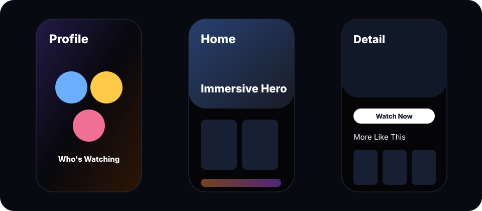
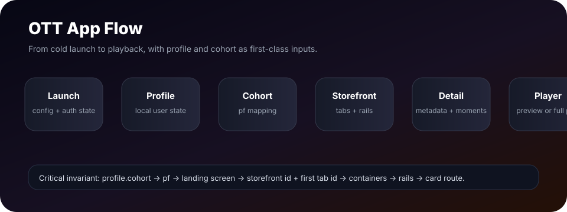
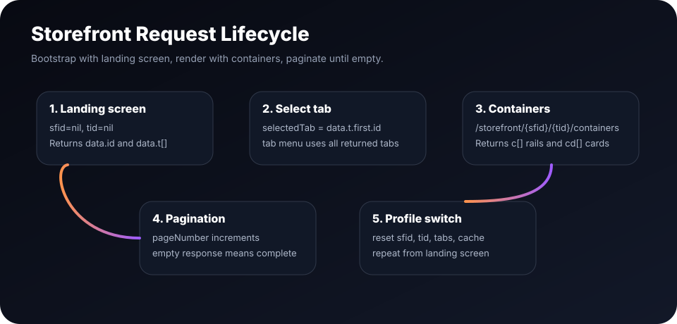

Build the full OTT app from one document.
This guide combines business requirements, journey rules, API contracts, data mapping, and implementation expectations for a Sony LIV style Quickplay OTT app. It is written so a product owner, designer, API engineer, or app engineer can understand the entire system without reading the source code first.

Product Principles
The app should feel native, content-led, and predictable. Every screen should be driven by profile context and API data unless a feature is explicitly marked as demo-only mock behavior.
Profile is the source of truth
Each profile owns a single cohort field. Storefront, search context, detail calls, and recommendations read from that profile context.
Render what the API returns
Storefront rails are generated from returned tabs, containers, and cards. Do not invent rails when the API has empty content.
Native navigation
All pushed screens should use a consistent navigation stack, custom toolbar buttons, and preserve swipe-back behavior.
Architecture
Use clean architecture boundaries. Presentation owns UI state, domain owns business concepts, data owns DTO mapping and network calls, and core owns shared configuration, networking, image building, session state, and player services.

Recommended module split
| Layer | Responsibilities | Examples |
|---|---|---|
| Core | Runtime config, request logging, session state, image URL building, player SDK wrapper. | NetworkClient, QuickplayRuntimeConfig, DemoSessionStore |
| Data | DTOs, routers, API clients, repository implementations. | StorefrontRouter, SearchRouter, ContentDetailRouter |
| Domain | Entities, use cases, navigation policies, cohort rules. | Profile, StorefrontItem, ContentNavigationPolicy |
| Presentation | SwiftUI views and view models. No hardcoded API decisions here. | StorefrontViewModel, ProfileHubViewModel |
App Launch
App launch prepares configuration and decides whether the user enters login or profile selection. Runtime config must be fetched once and reused. Screens should not wait to fetch config for the first time after navigation.
- Start runtime configuration fetch during app initialization.
- Read local auth completion flag.
- If not logged in, route to Login.
- If logged in, route to Profile Selection.
- When a profile is selected, reset storefront ids and fetch storefront for that profile cohort.
Configuration API
GET https://config-service-cdn.cms-qp.opt.quickplay.com/launch/config?device=androidmobile&client=sony-sony-androidmobileRequired keys include catalogURL, vodMetaDataURL, searchURL, imageResizeURL, recommendURL, OAuth/player keys, bookmarkURL, favoriteURL, and heartbeatURL.
Login and OTP
Login and OTP are mocked for the POC but should behave like production. The login page appears only once after install unless local state is cleared. OTP accepts only the configured demo code.
Business behavior
- Login page has no back button.
- OTP page has one custom navigation back button, not duplicate native plus custom.
- OTP uses six fields and accepts `121212` only.
- Loading is shown as a calm bottom toast, not an aggressive full screen blocker.
API behavior
POC uses mock login and OTP. Production can replace this with OTP send and verify endpoints without changing profile or storefront flow.
Profile
Profiles are locally stored for the POC. A fresh install should have no stale user-created profiles. Creation, edit, delete, avatar selection, kids toggle, and cohort assignment all persist in the local profile repository.
Profile rules
| Rule | Requirement |
|---|---|
| Max profiles | Allow creation up to five profiles. Hide Add Profile after five. |
| Avatar | Persist selected avatar image name with profile. Use the same image in profile selection, bottom tab, profile hub, and profile switch sheet. |
| Edit | Profile Selection > Edit Profiles opens the editor. Tapping another avatar inside editor loads that profile for editing. |
| Delete | Delete action shows confirmation, removes profile, and refreshes profile selection. |
| Switch | Tapping profile in Profile Selection routes directly to Storefront with shimmer while loading. |
Local profile shape
{
"id": "uuid",
"name": "Prabhu",
"imageName": "profiles/avatar_01",
"cohort": "entertainment",
"preference": "entertainment",
"isKidsProfile": false,
"dateOfBirth": "1998-02-12",
"gender": "male"
}Cohort
Cohort controls which storefront profile flag is sent. The app should use one field on profile: `profile.cohort`. Creation flow, edit flow, and dynamic override all update the same field.
| Cohort | profile.cohort | pf sent to APIs | Use case |
|---|---|---|---|
| Entertainment | entertainment | regular | Default movies/shows feed. |
| Sports | sports | kids | Sports storefront mapping for current POC API contract. |
| Reality | realityShows | Preschool | Reality storefront mapping for current POC API contract. |
| Kids | kids | kids | Kids profile behavior. |
Onboarding cohort selection
- After profile creation, show swipe-card cohort questionnaire.
- Right is Yes, left is No. Each answer increments one or more buckets.
- At the end, choose the highest score. Tie priority: Sports, Entertainment, Reality unless product changes it.
- Persist result into `profile.cohort`.
- Show a toast with selected cohort, then load Storefront with matching `pf`.
Dynamic override
On each card tap, inspect `cust_sc`. If value is `sports`, count Sports. If value is `shows`, count Reality. Otherwise count Entertainment. When any bucket reaches seven for the active profile, update the same `profile.cohort` field. Product decision: the new cohort can apply on next launch/profile selection, or storefront can be reloaded immediately if required.
Storefront
Storefront is API-driven. The first call discovers the storefront id and tabs. The render call fetches containers for the selected tab. Every profile switch must reset storefront id and tab id.

Storefront bootstrap
GET {catalogURL}/catalog/storefront/landingscreen
?ipr=true
&ivg=false
&sfInfo=true
®=in
&dt=androidmobile
&cPageNumber=1
&cPageSize=5
&client=sony-sony-androidmobile
&pf={profile.cohort.profileFlag}
&chrt=Sony1Container render call
GET {catalogURL}/catalog/storefront/{sfid}/{tid}/containers
?reg=IN
&dt=androidmobile
&client=sony-sony-androidmobile
&pf={profile.cohort.profileFlag}
&chrt=Sony1
&policy_evaluate=false
&pageSize=5
&pageNumber=1Rendering contract
- `data.id` from landing screen is the storefront id.
- `data.t[]` from landing screen is the tab menu.
- First selected tab is `data.t.first.id`.
- Container response returns `c[]` directly.
- Each `c` is one section or rail.
- Each `c.cd[]` is the render card array.
- If `c.cd[]` is empty, ignore that section for normal storefront rendering.
- Only the first `lo == "banner"` section is hero. Later banners are normal sections.
Hero variants
| Condition | Hero type | Notes |
|---|---|---|
| Tab name contains `sport`, case-insensitive | Sports stacked hero | Cards stack like sports feed. Add dark gradient for text readability. |
| Tab name contains `enter`, case-insensitive | Immersive hero | Image goes edge-to-edge and ignores safe area. Only this hero type does that. |
| Default | Carousel hero | Standard safe-area aligned hero. |
Section styling
Use `iar` for card aspect ratio. Use `bg_style` only if it has a valid `ia` value. For background image sections, construct the section background image using the section id and `bg_style.ia`. The media area is square, followed by a title band with balanced top/bottom padding.
Card Selection
Card tap behavior is determined by card metadata. Entitlement is considered full-access for demo. Do not route based on visual style alone.
| Card condition | Destination | API behavior |
|---|---|---|
| `ty == collection`, case-insensitive | Collection Browse | Call collection lookup or `cu` pagination if available. |
| `cty == sporthighlight` | Detail | Open sports-capable detail page. |
| Playable short/highlight | Player or detail by policy | Use preview/full playback when available. |
| Movie/show/episode | Detail | Call metadata detail API by content id. |
View All
View All is separate from normal storefront rendering. Storefront rails use `c.cd[]`. View All can use section source URLs, fixed IDs, or collection lookup and should paginate with pageNumber and pageSize. Add shimmer before loading to avoid loading during push animation.
Detail
Detail has regular, sports, and show-interactive variants. Current implementation can start with regular detail and branch by content metadata when business rules are ready.
Detail metadata
GET {vodMetaDataURL}/content
?ids={contentId}
&mode=detail
&st=published
®=IN
&dt=androidmobile
&client=sony-sony-androidmobile
&pf=regular
&chrt=Sony1More Like This
GET {vodMetaDataURL}/content/morelikethis/{contentId}
?cty={contentType}
&pageNumber=1
&pageSize=10
&client=sony-sony-androidmobile
®=in
&dt=webMoments search
GET {searchURL}/content/search
?client=sony-sony-androidmobile
&dt=androidmobile
&term={momentQuery}
®=in
&info=detail
&moment=true
&id={contentId}Episodes
If content is episodic (`webepisode`, `webseries`, `tvepisode`) show Episodes as the first tab. Series id priority is `stl_id -> setl_id -> id`. Fetch seasons first, cache them, select first season by default, then fetch episodes for selected season.
GET {vodMetaDataURL}/content/series/{seriesId}/seasons
?pageSize=100
&pageNumber=1
®=IN
&dt=androidmobile
&client=sony-sony-androidmobile
&pf={profileFlag}
&chrt=Sony1GET {vodMetaDataURL}/content/series/{seriesId}/episodes
?seasonId={seasonId}
&pageSize=100
&pageNumber=1
®=IN
&dt=androidmobile
&client=sony-sony-androidmobile
&pf={profileFlag}
&chrt=Sony1Search
Search has two pages: normal Search and AI Search. Normal Search displays initial default query results, search results, and facet filters from the API response. AI Search records speech, displays recognized text, translates to English where required, then calls the same search API.
Search API
GET {searchURL}/content/search
?client=sony-sony-androidmobile
&dt=androidmobile
&term={query}
®=in
&info=detail
&moment=trueFacet search
GET {searchURL}/content/search
?client=sony-sony-androidmobile
&dt=androidmobile
&term={query}
®=in
&info=detail
&moment=true
&cust_sc={selectedFacetTerm}- When entering Search, call search with default query `Trending Search`.
- When user types, call without facet and reload `facet.terms` from response.
- Ignore facet terms with count zero.
- When user taps a facet chip, call again with `cust_sc`.
- No search cache. Every type or facet action should hit API.
- Display one vertical grid from the returned result array only.
Player
Playback should use the Quickplay platform player SDK, not a standalone AVPlayer-only approach. The app can use preview URLs in hero/detail where available, and full content playback from detail or continue-watching routes.
Player responsibilities
- Enroll device/client using runtime config and OAuth/OVAT flow.
- Authorize content using content auth URL.
- Start heartbeat and bookmarks when playback begins.
- Show SDK unavailable fallback if pods or framework are missing.
- Interactive mock overlays can be shown for show/sports POC flows until backend contracts exist.
Profile Section
Profile hub is a user dashboard. It should show selected profile, switch profile sheet, account shortcuts, downloads, favorites, continue watching, and recommendations. POC favorites can be mock local data. Continue watching should come from local watched history until real APIs are connected.
| Section | Data source | Notes |
|---|---|---|
| Selected profile | Local profile repository | Name and avatar must match selected profile everywhere. |
| Continue watching | Local session/history for POC | Store full item object with progress. |
| Favorites | Mock/local for POC | Add/remove from detail plus button and hero plus button. |
| Recommendations | Seeded from storefront or recommendation API | Replace with final API once confirmed. |
| Settings | Mock functional pages | Profile switch opens bottom sheet and refreshes storefront on selection. |
API Catalog
| Area | Endpoint | Purpose | Important params |
|---|---|---|---|
| Config | `{launchConfigURL}/launch/config` | Runtime URLs and player credentials. | device, client |
| Storefront metadata | `{catalogURL}/catalog/storefront/landingscreen` | Discover sfid and tabs for profile cohort. | pf, chrt, reg, client |
| Storefront render | `{catalogURL}/catalog/storefront/{sfid}/{tid}/containers` | Fetch tab containers and cards. | pageSize, pageNumber, pf |
| Detail | `{vodMetaDataURL}/content` | Fetch content metadata. | ids, mode, st |
| More Like This | `{vodMetaDataURL}/content/morelikethis/{id}` | Fetch related content. | cty, pageNumber, pageSize |
| Search | `{searchURL}/content/search` | Text, AI, and moments search. | term, moment, cust_sc, id |
| Seasons | `{vodMetaDataURL}/content/series/{seriesId}/seasons` | Fetch season list. | pageSize=100 |
| Episodes | `{vodMetaDataURL}/content/series/{seriesId}/episodes` | Fetch episodes for a season. | seasonId |
| Collection | `{vodMetaDataURL}/content/lookup` | Browse collection/genre cards. | query, pageNumber, pageSize |
Data Model Reference
Storefront hierarchy
{
"data": {
"id": "storefront-id",
"t": [
{
"id": "tab-id",
"title": "TV Shows",
"c": [
{
"id": "section-id",
"title": "Trending",
"lo": "rail",
"iar": "0-16x9",
"bg_style": { "ia": [{ "ar": "1x1" }] },
"cd": [
{
"id": "content-id",
"title": "Content title",
"ty": "content",
"cty": "movie",
"cust_sc": "shows",
"stl_id": "series-id",
"setl_id": "season-id"
}
]
}
]
}
]
}
}Implementation invariants
- Use config URLs, not hardcoded service URLs, except launch config bootstrap.
- Image URLs are constructed through the shared image URL builder using imageResizeURL.
- Network logging belongs only in NetworkClient.
- Do not fetch `content?ids=` during normal storefront rendering because `c.cd[]` is authoritative for visible rails.
- Use `content?ids=` only for View All fixed-ID pagination where the source explicitly requires it.
QA Checklist
Functional checks
- Fresh install shows Login once, then Profile Selection after OTP.
- Profile selection tap opens Storefront immediately with shimmer.
- Profile switch resets sfid/tid and calls landing screen with current cohort pf.
- Tab switch fetches containers for selected tab and starts from top.
- Back navigation uses a single custom navigation item and preserves iOS swipe back.
- Episodes call seasons first, then episodes for selected season.
Visual checks
- Login, OTP, profile selection, bottom bar, and search match Figma.
- Immersive hero alone ignores safe area and goes edge-to-edge.
- Sports and regular hero do not have extra top gap on pushed storefront.
- Profile switch sheet fills width, has correct background, and dismisses on outside tap.
- Search overlay is full-screen translucent and animates by opacity, not ugly vertical panel movement.